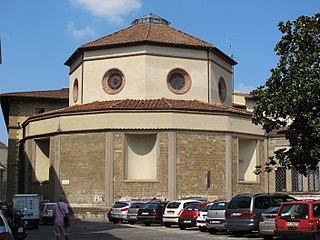
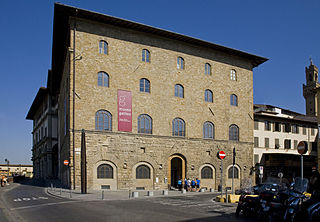
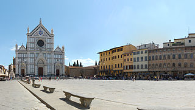
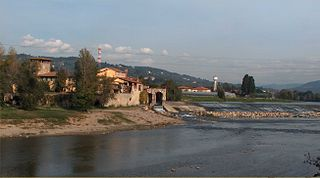
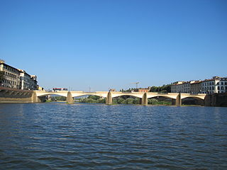
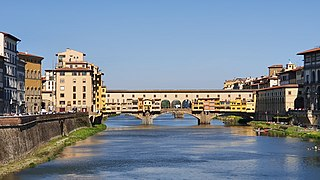
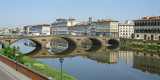
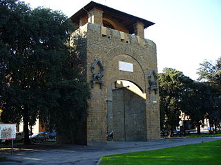
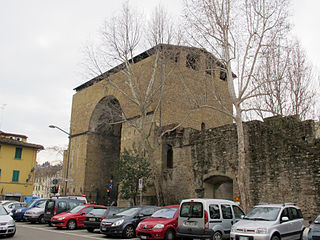

<!DOCTYPE html>
<html lang="en">
    <meta charset="utf-8">
    <meta name="viewport" content="width=device-width, initial-scale=1">
<head>
    <link rel="stylesheet" href="https://unpkg.com/leaflet@1.7.1/dist/leaflet.css" />
<script src="https://unpkg.com/leaflet@1.7.1/dist/leaflet.js"></script>
<link rel="stylesheet" href="//code.ionicframework.com/ionicons/1.5.2/css/ionicons.min.css">
<link rel="stylesheet" href="css/leaflet.awesome-markers.css">
<link rel="stylesheet" href="//unpkg.com/leaflet@1.3.1/dist/leaflet.css" />
<script src="//unpkg.com/leaflet@1.3.1/dist/leaflet.js"></script>
<link href="//fonts.googleapis.com/icon?family=Material+Icons"
      rel="stylesheet">
<link rel="stylesheet" href="https://unpkg.com/leaflet-control-geocoder/dist/Control.Geocoder.css" />
<script src="//unpkg.com/leaflet-control-geocoder/dist/Control.Geocoder.js"></script>     
<script src="js/leaflet.awesome-markers.js"></script>
<script src="//kit.fontawesome.com/0a382d656e.js" crossorigin="anonymous"></script>
   <style>
       #mapid { position:absolute; top:0; bottom:0; left:0; right:0; }
       .marker-pin {
  width: 30px;
  height: 30px;
  border-radius: 50% 50% 50% 0;
  background: #c30b82;
  position: absolute;
  transform: rotate(-45deg);
  left: 50%;
  top: 50%;
  margin: -15px 0 0 -15px;
}

.marker-pin::after {
    content: '';
    width: 24px;
    height: 24px;
    margin: 3px 0 0 3px;
    background: #fff;
    position: absolute;
    border-radius: 50%;
 }


.custom-div-icon i {
   position: absolute;
   width: 20px;
   font-size: 16px;
   left: 0;
   right: 0;
   margin: 12px auto;
   text-align: center;
}
.custom-div-icon i.awesome {
    margin: 12px auto;
    font-size: 17px;
 }
</style>
</head>
<body>
    <div id="mapid"></div>
    <script>
        
      

   
    

    var icon = L.divIcon({
    shadowUrl: 'shadow.png',
	className: 'custom-div-icon',
        html: "<div style='background-color:#cf211b;' class='marker-pin'></div><i class='fas fa-cross'></i>",
        iconSize: [30, 42],
        shadowSize:   [50, 64], // size of the shadow
        iconAnchor: [15, 42],
        shadowAnchor: [4, 62],  // the same for the shadow
        popupAnchor:  [0, -35] // point from which the popup should open relative to the iconAnchor
        
    });
    var porta = L.divIcon({
	className: 'custom-div-icon',
        html: "<div style='background-color:#cf211b;' class='marker-pin'></div><i class='fas fa-archway'></i>",
        iconSize: [30, 42],
        shadowSize:   [50, 64], // size of the shadow
        iconAnchor: [15, 42],
        shadowAnchor: [4, 62],  // the same for the shadow
        popupAnchor:  [0, -35] // point from which the popup should open relative to the iconAnchor
        
    });
    var palace = L.divIcon({
	className: 'custom-div-icon',
        html: "<div style='background-color:#cf211b;' class='marker-pin'></div><i class='fas fa-place-of-worship'></i>",
        iconSize: [30, 42],
        shadowSize:   [50, 64], // size of the shadow
        iconAnchor: [15, 42],
        shadowAnchor: [4, 62],  // the same for the shadow
        popupAnchor:  [0, -35] // point from which the popup should open relative to the iconAnchor
        
    });
    var vuoto = L.divIcon({
	className: 'custom-div-icon',
        html: "<div style='background-color:#cf211b;' class='marker-pin'></div><i class='fas fa-bullseye'></i>",
        iconSize: [30, 42],
        shadowSize:   [50, 64], // size of the shadow
        iconAnchor: [15, 42],
        shadowAnchor: [4, 62],  // the same for the shadow
        popupAnchor:  [0, -35] // point from which the popup should open relative to the iconAnchor
        
    });
    var unp = L.divIcon({
	className: 'custom-div-icon',
        html: "<div style='background-color:#4838cc;' class='marker-pin'></div><i class='fas fa-times'></i>",
        iconSize: [30, 42],
        shadowSize:   [50, 64], // size of the shadow
        iconAnchor: [15, 42],
        shadowAnchor: [4, 62],  // the same for the shadow
        popupAnchor:  [0, -35] // point from which the popup should open relative to the iconAnchor
        
    });
    var bridge = L.divIcon({
	className: 'custom-div-icon',
        html: "<div style='background-color:#cf211b;' class='marker-pin'></div><i class='fas fa-dungeon'></i>",
        iconSize: [30, 42],
        shadowSize:   [50, 64], // size of the shadow
        iconAnchor: [15, 42],
        shadowAnchor: [4, 62],  // the same for the shadow
        popupAnchor:  [0, -35] // point from which the popup should open relative to the iconAnchor
        
    });
   

 
 
    var church_x = L.marker([43.7725122,11.4828408,14], {icon: icon}).bindPopup("<br><b>Monastero di San Girolamo</b><br> Oggi Caserma Cesare De Laugier <br><br> <a href='https://it.wikipedia.org/wiki/Castello_d%27Altafronte' target='_blank'><i class='fas fa-info-circle'></i></a><br> <i style= 'backgound_color:lightgray;'> pagina 706</i><a href='https://milenacorbellini.github.io/VaSto_master/evt2beta2/index.html#/imgTxt?d=Storia_Fiorentina&p=fol_701&s=Proemio&e=diplomatic&ce=critical' target='_blank'><i><i class='fas fa-book-reader'></i></i></a> " );  
    var church_y = L.marker([43.77071, 11.25502], {icon: icon}).bindPopup("<br><b>Chiesa di San Michele in Orto</b><br> Oggi Chiesa di Orsanmichele. <br> <br> <a href='https://it.wikipedia.org/wiki/Castello_d%27Altafronte' target='_blank'><i class='fas fa-info-circle'></i></a><br><i> pagina 684</i><a href='https://milenacorbellini.github.io/VaSto_master/evt2beta2/index.html#/imgTxt?d=Storia_Fiorentina&p=fol_701&s=Proemio&e=diplomatic&ce=critical' target='_blank'><i><i class='fas fa-book-reader'></i></i></a> " );
     
    var church_z =L.marker([43.7753, 11.26015], {icon: icon}).bindPopup("<br><b>Santa Maria Ritonda</b><br> Oggi Rotonda del Brunelleschi. <br><br> <a href='https://it.wikipedia.org/wiki/Castello_d%27Altafronte' target='_blank'><i class='fas fa-info-circle'></i></a><br><i>pagina 690; pagina 697; pagina 701; pagina 702</i><a href='https://milenacorbellini.github.io/VaSto_master/evt2beta2/index.html#/imgTxt?d=Storia_Fiorentina&p=fol_701&s=Proemio&e=diplomatic&ce=critical' target='_blank'><i><i class='fas fa-book-reader'></i></i></a> " );
    var church_a =L.marker([43.76921,11.25214], {icon: icon}).bindPopup("<br><b>Santo Apostolo</b> <br> Oggi Santi Apostoli. <br> <br> <a href='https://it.wikipedia.org/wiki/Castello_d%27Altafronte' target='_blank'><i class='fas fa-info-circle'></i></a><br><i> pagina 697</i><a href='https://milenacorbellini.github.io/VaSto_master/evt2beta2/index.html#/imgTxt?d=Storia_Fiorentina&p=fol_701&s=Proemio&e=diplomatic&ce=critical' target='_blank'><i><i class='fas fa-book-reader'></i></i></a> " );
    
    var church_b = L.marker([43.7677365,11.2520177], {icon: icon}).bindPopup("<br><b>Chiesa di San Jacopo Soprarno</b><br> <br> <a href='https://it.wikipedia.org/wiki/Castello_d%27Altafronte' target='_blank'><i class='fas fa-info-circle'></i></a><br><i> pagina 697</i><a href='https://milenacorbellini.github.io/VaSto_master/evt2beta2/index.html#/imgTxt?d=Storia_Fiorentina&p=fol_701&s=Proemio&e=diplomatic&ce=critical' target='_blank'><i><i class='fas fa-book-reader'></i></i></a> " );
    var church_h = L.marker([43.7746346,11.2493859,15], {icon: icon}).bindPopup("<br><b>Chiesa di Santa Maria Novella</b><br><br> <a href='https://it.wikipedia.org/wiki/Castello_d%27Altafronte' target='_blank'><i class='fas fa-info-circle'></i></a><br> <i> pagina 701</i><a href='https://milenacorbellini.github.io/VaSto_master/evt2beta2/index.html#/imgTxt?d=Storia_Fiorentina&p=fol_701&s=Proemio&e=diplomatic&ce=critical' target='_blank'><i><i class='fas fa-book-reader'></i></i></a>  " );
    var church_d = L.marker([43.7649448,11.2478774], {icon: icon}).bindPopup("<br><b>Chiesa di San Felice in Piazza</b><br><br> <a href='https://it.wikipedia.org/wiki/Castello_d%27Altafronte' target='_blank'><i class='fas fa-info-circle'></i></a><br> <i> pagina 684</i> <a href='https://milenacorbellini.github.io/VaSto_master/evt2beta2/index.html#/imgTxt?d=Storia_Fiorentina&p=fol_701&s=Proemio&e=diplomatic&ce=critical' target='_blank'><i><i class='fas fa-book-reader'></i></i></a> " ); 
     

 
    var church_f = L.marker([43.7720656,11.2513904,13], {icon: icon}).bindPopup("<br><b>Monastero di San Salvi</b><br><br> <a href='https://it.wikipedia.org/wiki/Castello_d%27Altafronte' target='_blank'><i class='fas fa-info-circle'></i></a><br> <i> pagina 702; pagina 704</i><br><a href='https://milenacorbellini.github.io/VaSto_master/evt2beta2/index.html#/imgTxt?d=Storia_Fiorentina&amp;p=p_699&amp;s=Proemio&amp;e=diplomatic&amp;ce=critical%2Fdata-entity-id%3D%22Altafronte%22' target='blank'><i><i class='fas fa-book-reader'></i></i></a>  " ); 
     
    


    var castel = L.marker([43.7677337,11.2559032,15], {icon:palace}).bindPopup("<br><br><b>Castello d'Altafronte</b><br>Oggi Museo Galileo<br> <a ref='https://it.wikipedia.org/wiki/Castello_d%27Altafronte' target='_blank'><i class='fas fa-info-circle'></i></a><br> <i><a href='https://milenacorbellini.github.io/VaSto_master/evt2beta2/index.html#/imgTxt?d=Storia_Fiorentina&p=p_699&s=Proemio&e=diplomatic&ce=critical' target='_new'> pagina 699</a></i><br> <i><i class='fas fa-book-reader'></i></i></a> ");

  
    var space_a = L.marker([43.76895, 11.26057], {icon: vuoto}).bindPopup("<br><b>Piazza Santa Croce</b><br><br> <a href='https://it.wikipedia.org/wiki/Castello_d%27Altafronte' target='_blank'><i class='fas fa-info-circle'></i></a><br> <i> pagina 701</i><br> <a href='https://milenacorbellini.github.io/VaSto_master/evt2beta2/index.html#/imgTxt?d=Storia_Fiorentina&p=fol_701&s=Proemio&e=diplomatic&ce=critical' target='_blank'><i><i class='fas fa-book-reader'></i></i></a> " );
    var space_b = L.marker([43.77626, 11.25174], {icon: vuoto}).bindPopup("<br><b>Campo Corbolini</b><br> Oggi Chiesa di San Jacopo in Campo Corbolini<br><br><a href='https://it.wikipedia.org/wiki/Castello_d%27Altafronte' target='_blank'><i class='fas fa-info-circle'></i></a><br> <i> pagina 697</i><br><a href='https://milenacorbellini.github.io/VaSto_master/evt2beta2/index.html#/imgTxt?d=Storia_Fiorentina&p=fol_701&s=Proemio&e=diplomatic&ce=critical' target='_blank'><i><i class='fas fa-book-reader'></i></i></a> " );
    var church_c = L.marker([43.7689301,11.2562839,15], {icon:icon}).bindPopup("<br><b>Chiesa di San Piero Scheraggio</b><br> <br> <a href='https://it.wikipedia.org/wiki/Castello_d%27Altafronte' target='_blank'><i class='fas fa-info-circle'></i></a><br> <i> pagina 699</i><a href='https://milenacorbellini.github.io/VaSto_master/evt2beta2/index.html#/imgTxt?d=Storia_Fiorentina&p=fol_701&s=Proemio&e=diplomatic&ce=critical' target='_blank'><i><i class='fas fa-book-reader'></i></i></a> " );
    var space_c =L.marker([43.7650644,11.2954318], {icon: vuoto}).bindPopup("<br><b>Rovezzano</b><br> <br> <a href='https://it.wikipedia.org/wiki/Castello_d%27Altafronte' target='_blank'><i class='fas fa-info-circle'></i></a><br><i> pagina 704</i><br><a href='https://milenacorbellini.github.io/VaSto_master/evt2beta2/index.html#/imgTxt?d=Storia_Fiorentina&p=fol_701&s=Proemio&e=diplomatic&ce=critical' target='_blank'><i><i class='fas fa-book-reader'></i></i></a>  ");
    var bridge_a =L.marker([43.7661583,11.2587278], {icon: bridge}).bindPopup("<br><b>Ponte Rubaconte</b> <br> Oggi Ponte Alle Grazie<br> <br> <a href='https://it.wikipedia.org/wiki/Castello_d%27Altafronte' target='_blank'><i class='fas fa-info-circle'></i></a><br><i> pagina 684; pagina 700; pagina 702</i> <br><a href='https://milenacorbellini.github.io/VaSto_master/evt2beta2/index.html#/imgTxt?d=Storia_Fiorentina&p=fol_701&s=Proemio&e=diplomatic&ce=critical' target='_blank'><i><i class='fas fa-book-reader'></i></i></a> " );
    var bridge_b =L.marker([43.76802,11.25315], {icon: bridge}).bindPopup("<br><b>Ponte Vecchio</b><br><br> <a href='https://it.wikipedia.org/wiki/Castello_d%27Altafronte' target='_blank'><i class='fas fa-info-circle'></i></a><br> <i> pagina 684; pagina 700; pagina 702</i><br><a href='https://milenacorbellini.github.io/VaSto_master/evt2beta2/index.html#/imgTxt?d=Storia_Fiorentina&p=fol_701&s=Proemio&e=diplomatic&ce=critical' target='_blank'><i><i class='fas fa-book-reader'></i></i></a> " );
    var bridge_c =L.marker([43.7702355,11.2473074,15], {icon: bridge}).bindPopup("<br><b>Ponte alla Carraia</b><br><br> <a href='https://it.wikipedia.org/wiki/Castello_d%27Altafronte' target='_blank'><i class='fas fa-info-circle'></i></a><br><i> pagina 697</i><br> <a href='https://milenacorbellini.github.io/VaSto_master/evt2beta2/index.html#/imgTxt?d=Storia_Fiorentina&p=fol_701&s=Proemio&e=diplomatic&ce=critical' target='_blank'><i><i class='fas fa-book-reader'></i></i></a> ");
    var door_c =L.marker([43.7696014,11.2534641,15], {icon: porta}).bindPopup("<br><b>Porta al Prato</b><br><br> <a href='https://it.wikipedia.org/wiki/Castello_d%27Altafronte' target='_blank'><i class='fas fa-info-circle'></i></a><br><i> pagina 701; pagina 706</i><a href='https://milenacorbellini.github.io/VaSto_master/evt2beta2/index.html#/imgTxt?d=Storia_Fiorentina&p=fol_701&s=Proemio&e=diplomatic&ce=critical' target='_blank'><i><i class='fas fa-book-reader'></i></i></a>  ");
    var door_d =L.marker([43.7837101,11.259546,17], {icon: porta}).bindPopup("<br><b>Porta San Gallo</b><br><br> <a href='https://it.wikipedia.org/wiki/Castello_d%27Altafronte' target='_blank'><i class='fas fa-info-circle'></i></a><br><i> pagina 706</i><br><a href='https://milenacorbellini.github.io/VaSto_master/evt2beta2/index.html#/imgTxt?d=Storia_Fiorentina&p=fol_701&s=Proemio&e=diplomatic&ce=critical' target='_blank'><i><i class='fas fa-book-reader'></i></i></a>  ");
    var unspace =L.marker([43.76681915131317, 11.26871568873621], {icon: unp}).bindPopup("<br><b>Porta alla Giustizia</b><br> Originariamente posta all'inizio di Via dei Malcontenti, oggi non più esistente <br><br> <a href='https://it.wikipedia.org/wiki/Castello_d%27Altafronte' target='_blank'><i class='fas fa-info-circle'></i></a><br><i> pagina 684</i><br><a href='https://milenacorbellini.github.io/VaSto_master/evt2beta2/index.html#/imgTxt?d=Storia_Fiorentina&p=fol_701&s=Proemio&e=diplomatic&ce=critical' target='_blank'><i><i class='fas fa-book-reader'></i></i></a> " );
    var unspace_a =L.marker([43.7674468,11.2573619,19], {icon: unp}).bindPopup("<br><b>Porticciula d'Arno</b><br> Originariamente posta all'inizio dell'attuale Piazza Mentana, oggi non più esistente<br><br> <a href='https://it.wikipedia.org/wiki/Castello_d%27Altafronte' target='_blank'><i class='fas fa-info-circle'></i></a><br><i> pagina 701; pagina 702; pagina 703</i><a href='https://milenacorbellini.github.io/VaSto_master/evt2beta2/index.html#/imgTxt?d=Storia_Fiorentina&p=fol_701&s=Proemio&e=diplomatic&ce=critical' target='_blank'><i><i class='fas fa-book-reader'></i></i></a>  " );
    var ponte_f =L.marker([43.76477, 11.27104], {icon: bridge}).bindPopup("<br><b>Ponte Reale</b><br> Oggi chiamato Ponte San Niccolò<br> <a href='https://it.wikipedia.org/wiki/Castello_d%27Altafronte' target='_blank'><i class='fas fa-info-circle'></i></a><br><i> pagina 701</i><a href='https://milenacorbellini.github.io/VaSto_master/evt2beta2/index.html#/imgTxt?d=Storia_Fiorentina&p=fol_701&s=Proemio&e=diplomatic&ce=critical' target='_blank'><i><i class='fas fa-book-reader'></i></i></a>  ");
    var door_g =L.marker([43.7708561,11.2353969,17], {icon: porta}).bindPopup("<br><b>Porta San Frediano</b><br><br> <a href='https://it.wikipedia.org/wiki/Castello_d%27Altafronte' target='_blank'><i class='fas fa-info-circle'></i></a><br><i> pagina 701</i><br><a href='https://milenacorbellini.github.io/VaSto_master/evt2beta2/index.html#/imgTxt?d=Storia_Fiorentina&p=fol_701&s=Proemio&e=diplomatic&ce=critical' target='_blank'><i><i class='fas fa-book-reader'></i></i></a> ");
    var door_a =L.marker([43.7644805,11.2648448,17], {icon: porta}).bindPopup("<br><b>Porta San Niccolò</b><br><br> <a href='https://it.wikipedia.org/wiki/Castello_d%27Altafronte' target='_blank'><i class='fas fa-info-circle'></i></a><br><i> pagina 701</i> <br><a href='https://milenacorbellini.github.io/VaSto_master/evt2beta2/index.html#/imgTxt?d=Storia_Fiorentina&p=fol_701&s=Proemio&e=diplomatic&ce=critical' target='_blank'><i><i class='fas fa-book-reader'></i></i></a> "); 
    var mura =L.marker([43.7638336,11.2596796,17], {icon: porta}).bindPopup("<br><b>Mura di San Niccolò</b><br><br> <a href='https://it.wikipedia.org/wiki/Castello_d%27Altafronte' target='_blank'><i class='fas fa-info-circle'></i></a><br><i> pagina 704</i><br><a href='https://milenacorbellini.github.io/VaSto_master/evt2beta2/index.html#/imgTxt?d=Storia_Fiorentina&p=fol_701&s=Proemio&e=diplomatic&ce=critical' target='_blank'><i><i class='fas fa-book-reader'></i></i></a>"); 
    
    var churches = L.layerGroup([church_x, church_y, church_z, church_h, church_a, church_b, church_d, church_f, church_c ]);   
    var castels = L.layerGroup([castel]);
    var doors = L.layerGroup([door_c, door_d, door_g, door_a, mura]);
    var spaces = L.layerGroup([space_a, space_b, space_c ]);
    var bridges = L.layerGroup([bridge_a, bridge_b, bridge_c, ponte_f]);
    var unplaces = L.layerGroup([unspace, unspace_a]);
    


var overlayMaps = {
    "castelli <i class='fas fa-place-of-worship'></i>":castels

};
        
var mymap = L.map('mapid').setView([43.7661,11.2594], 14);
        L.tileLayer('https://api.maptiler.com/maps/streets/{z}/{x}/{y}.png?key=5phxNvLIOj3VzYvgtSHl', {
    attribution:'<a href="https://www.maptiler.com/copyright/" target="_blank">&copy; MapTiler</a> ',
    maxZoom: 20,
    id: 'mapbox/streets-v11',
    tileSize: 512,
    zoomOffset: -1,
    layers:[castels]
    }).addTo(mymap);
    L.control.scale().addTo(mymap);

L.control.layers(null, overlayMaps, {"autoZIndex": true, "collapsed": false, "position": "topright"}).addTo(mymap); 

var osm=new L.tileLayer('http://{s}.tile.osm.org/{z}/{x}/{y}.png').addTo(mymap);

    L.Control.geocoder().addTo(mymap);


    </script>
</body>
</html>
